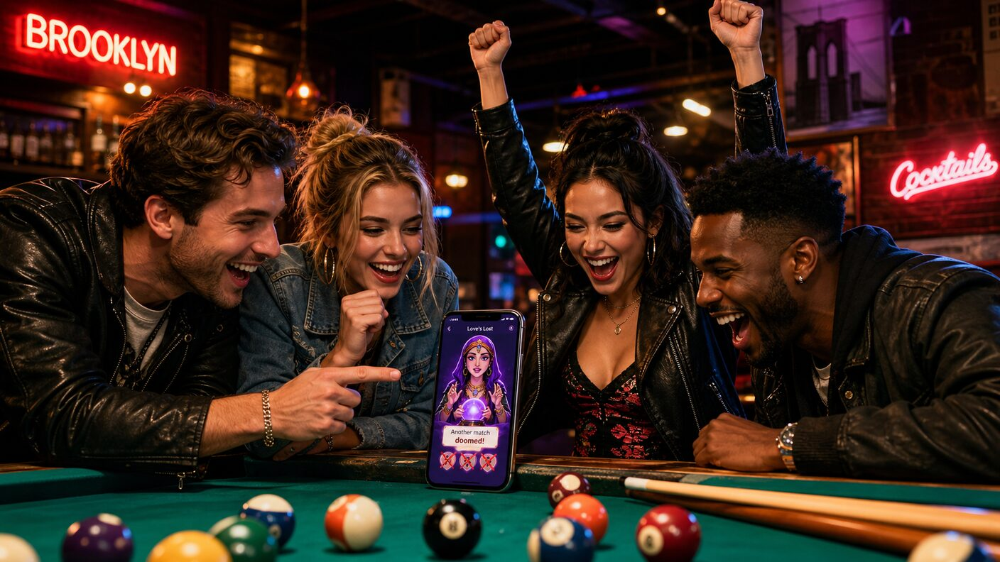

Tuesday, September 8, 2026 - bonus episode: the week had a second twenty-fifth in it
Milo Turns Twenty-Five
Previously, on the longest week in recorded Brooklyn history:
Kenny built streakbearer, a bot to break his meditation streak for him. The bot declined to fail. The streak is at forty-seven and has a co-parent.
Zora's pocket holds two cards: Kenny's ("when the streak breaks") and Milo's ("a good card"). David's betting pool now prices a third card, for the bot.
David claimed his house through the forbidden rite - and then, in unrelated news, moved.
Milo turned twenty-five yesterday, in the same twenty-four hours David spent executing a forbidden SQL rite over duplicate houses, which tells you everything about how this group schedules growth. Two twenty-fifths in one week. The neighborhood's collective frontal lobe cannot take another midnight ceremony, so Milo's was observed the following evening, at low volume, at David and Yosh's new place - four minutes from Defne and Kenny, next to Vera Yoga, close enough to the BQE that the traffic hums like a white-noise machine nobody bought.
"New place" is doing some work in that sentence. Yosh was in charge of movers. There were no movers. They moved anyway, which is why the living room's furniture is boxes, the couch is a mattress, and the one (1) box Yosh has personally carried this week was transported with both necklaces - the ones on his belt loops - swinging like chandeliers. He wore a crop top to his own move. "Performative male" is not a criticism here; it is a job title, and Yosh is tenured.
Defne's gift was creativity spliffs, which is the correct gift, because Milo is the creative design mind behind Speakeasy, and the new build of the game - the conversation one, built on Splish, where you talk to the characters and the story moves based on what you say - is the first version Defne has ever liked. Versions one through six she hated. Hated. She said so at the party, warmly, while asking to play again.
First week in the neighborhood: one (1) box carried, zero movers, one counter already spotless (artist's rendering)
The party took turns. The game has levels, and the levels have lore, and the lore is mostly Defne's record. Mary the Matchmaker: Defne failed those levels so badly and so often that the people Mary introduced her to hated her - hated her - and the game said so in writing. Larry the Librarian: she walked in, held forty minutes of intellectual HCI conversation, and was, by every metric the game tracks, on fire. Milo watched everyone play like a proud dungeon master who also happens to be wiping down the counter. He was wiping down the counter the entire night. It is not his counter. It is not even his apartment. Milo loves cleaning the way David loves a Citi Bike, except he never brings it up - he just does it, religiously, and the counter is his now in every way except paperwork.
Milo, turning twenty-five, offered the table his realizations going into the new year. He has two.
"One: all women are awful," said Milo, who recently got burned, and the table honored the burn with the silence it deserved.
"Two: all people are liars."
"What's three?" Lea asked.

Mary the Matchmaker took lives. Larry the Librarian gave them back.
"There were three," Milo said. "I forgot the third one."
The third realization is now an open thread. The group chat has already priced it. David says it was going to be about the World Cup. Defne used the opening to pitch, again, the huzzlessness route - a full retreat from the field, a monastery of the self - and Milo, mid-wipe, allowed that maybe that's the move. "Maybe that's the move" is not a commitment. But coming from Milo, who speaks maybe nine sentences a year, it was received as a historic address.
Meanwhile, in the David corner: Astra dropped today, and David had already built with it by dinner, because David is always first. At Noon - where he is CTO, where the sourcing happens - the new salesperson is so good that David had him write a guide for the other salespeople, and David himself built software that records sales conversations and scores them with feedback, which is dystopian, and he knows it's dystopian, and he shipped it anyway. Raymond, his cofounder, spent the week rage-baiting LinkedIn from the company account. The posts were read aloud at the party, as is tradition:
"Our office is on fire. We kept working. This is what seed-stage looks like."
"A competitor offered my entire team double their salaries this morning. Nobody picked up. (We're hiring.)"
"I don't believe in weekends. Rest is a Series A mindset."
42 on the back, the World Cup on the TV, table run twice.
David insists engagement is up. David once bet on elections - historically, per the record - and some habits just change costumes.
And Kenny gave Milo a website. For the game. It is a real website, and it was, technically, designed: the bottom section is Simile's scheme, one for one, the way a tribute band is technically a band. This is the pattern now. Kenny copied Poke's architecture for Splish and it didn't work, so he tried reversing the architecture - which makes no sense, which everyone said at the time, which he heard and nodded through - and then he was surprised it didn't work. Surprised. The man whose streak is co-held by an enlightened bot remains incapable of suspecting his own plans.
After cake, Milo took everyone to play pool, because Milo always plays pool, and the invitation ritual is sacred, and for once nobody declined. He wore the 42 jersey - the woven one, from the brand he runs with Kenny and Faisan - and ran the table twice while explaining the World Cup draw to people who did not ask. He turned twenty-five the way he does everything: cleanly.
His year opens with a game people finally love, a counter that isn't his, two realizations and a missing third, and the huzzlessness question on the table. Zora, reached for comment, said the third realization is in her pocket. She charged five dollars for saying so. It remains the best business model in the neighborhood.
written with 100% organic, free-range slop. no counters were left uncleaned in the making of this episode